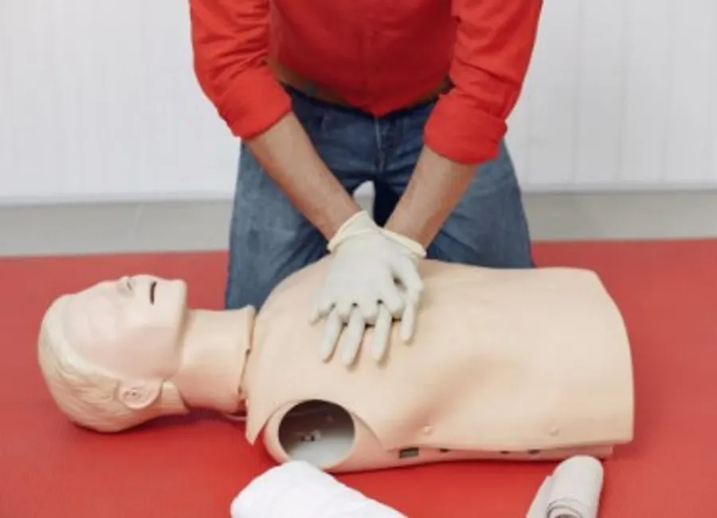
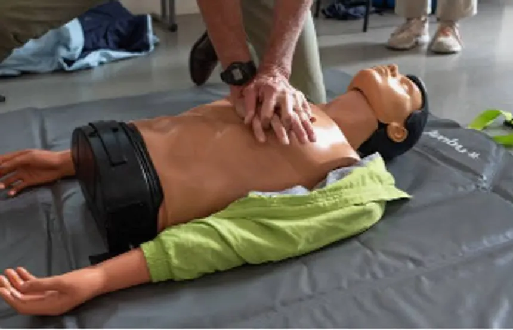
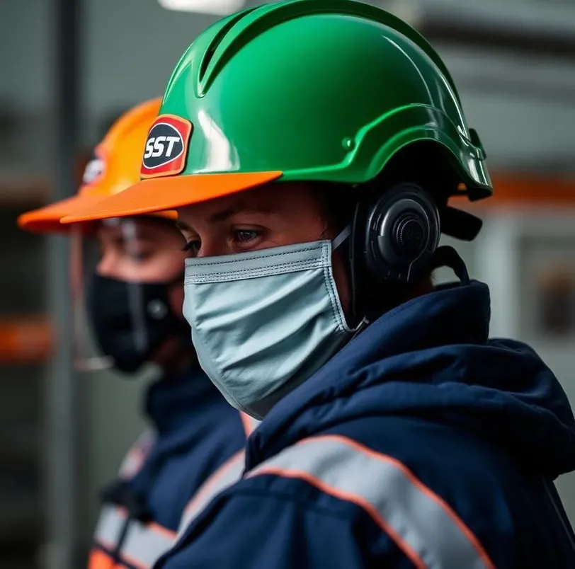
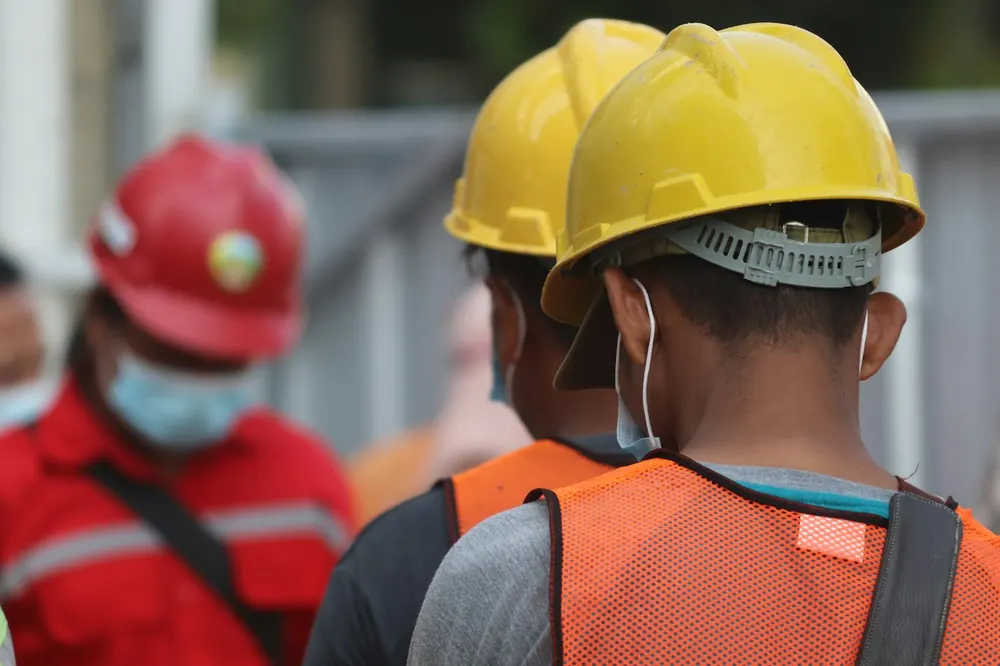
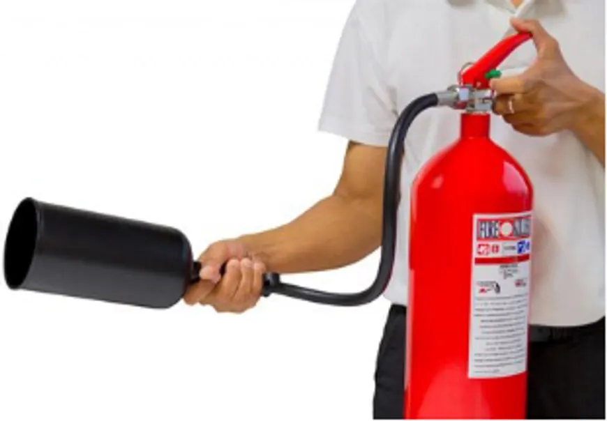
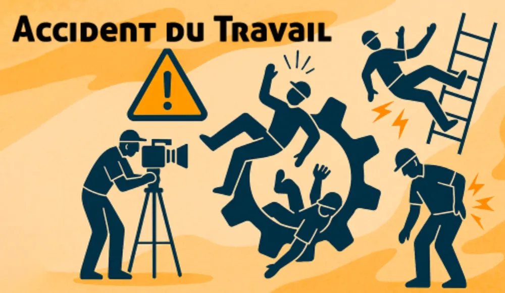

Nos formations
Formations santé et sécurité au travail
Secourisme (SST), prévention des risques professionnels, DUERP, incendie, analyse des accidents du travail : des formations concrètes, en intra comme en inter-entreprises.
Secourisme
Formation Sauveteur Secouriste du Travail (SST)
Secourisme et prévention des accidents du travail : apprenez à protéger, alerter et secourir en attendant les secours.

- Durée
- 2 jours
- Prérequis
- Aucun
- En inter
- 350 € HTpar personne
- En intra
- 1 500 €groupe de 4 à 10 personnes
Objectif
- Secourisme
- Prévenir les accidents du travail
Secourisme
Recyclage SST
Renouvelez vos connaissances en secourisme et maintenez votre diplôme de Sauveteur Secouriste du Travail à jour.

- Durée
- 1 journée
- Prérequis
- Disposer du diplôme SST
- En inter
- 300 € HTpar personne
- En intra
- 1 100 €groupe de 4 à 10 personnes
Objectif
- Renouvellement des connaissances en secourisme
Sensibilisation
Sensibilisation « Gestes qui sauvent »
Une demi-journée pour acquérir les réflexes essentiels face à une urgence vitale.

- Durée
- 3 h 30
- Prérequis
- Aucun
- En inter
- 300 € HTpar personne
- En intra
- 1 000 €groupe de 5 à 10 personnes
Vous saurez
- Examiner une victime
- Passer l’alerte
- Secourir face à un saignement abondant
- Secourir face à un étouffement
- Secourir une personne en arrêt cardiaque et en arrêt respiratoire
- Utiliser un défibrillateur
Prévention & DUERP
Devenir référent en prévention des risques professionnels
Acquérez les bases de la santé et sécurité au travail et apprenez à structurer la démarche de prévention dans votre entreprise.

- Durée
- 3 jours · 21 hsur place ou en distanciel
- Prérequis
- Aucun
- En inter
- 1 100 € HTpar personne
- En intra
- Sur demande
Objectifs
- Acquérir les notions de base en santé et sécurité au travail
- Être capable de réaliser un Document Unique d’évaluation des risques professionnels (DUERP) et un plan d’action
- Maîtriser la démarche d’accident du travail
Prévention incendie
Les moyens de lutte contre l’incendie
Identifier les risques incendie de votre entreprise et apprendre à utiliser les moyens de première intervention.

- Durée
- 1 h 30
- Prérequis
- Aucun
- Tarif
- 200 € HTpar personne
- Format
- Module e-learning possible
Objectifs
- Connaître les risques incendie dans son entreprise
- Utiliser les moyens de lutte contre l’incendie (extincteur, sans feu réel)
Prévention
Analyser et comprendre les accidents du travail
Comprendre pourquoi les accidents surviennent et comment agir durablement pour les éviter.

- Durée
- 1 joursur place
- Prérequis
- Aucun
- En intra
- 1 300 €groupe de 3 à 10 personnes
Objectifs
- Comprendre les enjeux de la prévention, les coûts directs et indirects des accidents du travail
- Connaître les notions de base de la législation
- Appliquer la méthode de l’arbre des causes
- Construire un plan d’action
Sur mesure
Formation spécifique à la demande de l’entreprise
Vous avez un besoin précis ? Plusieurs sensibilisations peuvent être construites avec vous, et adaptées aux horaires de votre entreprise.
- Tarif
- Sur devis
- Horaires
- Adaptés à votre entreprise
Sensibilisations possibles
- Port des équipements de protection individuelle (EPI)
- Manutention et port de charges
- Safety Day : faites de la sécurité un jeu et du team building
- Adaptation aux horaires des entreprises
Financement
Deux possibilités de financement
Une partie du coût de nos formations peut être prise en charge selon votre statut.
Les OPCO — pour les entreprises
Pour connaître l’OPCO auquel vous êtes rattaché, utilisez le service officiel « Quel est mon OPCO ? » (nouvel onglet).
Le FAF — pour les chefs d’entreprise et indépendants
Les dirigeants et travailleurs indépendants peuvent solliciter leur fonds d’assurance formation.
Questions fréquentes
Avant de vous inscrire
Quelle différence entre formation en inter et en intra ?
L’inter correspond à une inscription individuelle, tarifée par personne. L’intra est organisée pour votre groupe, avec un tarif global pour un nombre de participants donné (par exemple de 4 à 10 personnes pour la formation SST).
Faut-il un prérequis pour suivre une formation ?
Aucun prérequis pour la plupart de nos formations. Seul le recyclage SST nécessite de disposer du diplôme de Sauveteur Secouriste du Travail.
Comment financer ma formation ?
Les entreprises peuvent se rapprocher de leur OPCO, et les chefs d’entreprise ou indépendants de leur FAF. Contactez-nous si vous souhaitez en discuter.
Peut-on adapter une formation aux besoins de notre entreprise ?
Oui. Nous proposons des formations spécifiques à la demande de l’entreprise (EPI, manutention, Safety Day…) et pouvons nous adapter à vos horaires.
La formation incendie peut-elle se faire à distance ?
Un module en e-learning est possible pour la formation « Les moyens de lutte contre l’incendie ».
Besoin d’une formation adaptée à votre entreprise ?
Parlons de vos équipes, de vos risques et de vos contraintes. Nous vous répondons avec une proposition claire, adaptée à votre activité.